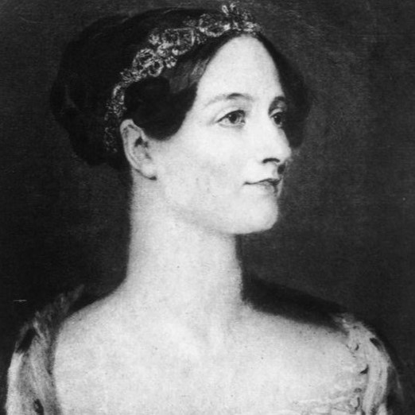

'SHE IS.

MULHER,
NA TECNOLOGIA.
As mulheres tiveram um papel importantissímo
no desenvolvimento de inovações, programas e jogos.
A importância das mulheres na tecnologia está no fato de que,
com mulheres, é possível ampliar a visão na criação de produtos
e serviços tecnológicos. Além disso, a inclusão de mulheres na
tecnologia ajuda a promover a igualdade de gênero e a combater
a discriminação.
No setor de tecnologia, a igualdade de gênero é um desafio.
No entanto, isso não significa que não existam mulheres na
tecnologia que tenham marcado o setor e contribuído com suas criações.
A presença feminina na tecnologia é essencial para impulsionar a inovação
e garantir que todas as vozes sejam ouvidas na construção do futuro digital.
" LUGAR DE MULHER É ONDE ELA QUISER. "
A história das mulheres na tecnologia é repleta de pioneiras que
desafiaram estereótipos e abriram portas para que outras pudessem seguir seus sonhos.
Há várias mulheres que ganharam destaque ao longo da história da tecnologia, seja na
criação de um algoritmo, uma linguagem ou de um game clássico! Ter referências é
algo muito importante para servir de inspiração ao longo da nossa carreira.
Por isso, eu convido VOCÊ a vir comigo e conhecer um pouco mais da história e desse mundo repleto
de mulheres inteligêntes, corajosas, donas de suas decisões e sonhos.
Quer saber mais ? arrasta pra cima!
A PRIMEIRA MULHER PROGRAMADORA DE COMPUTADORES DO MUNDO.
01
 MULHER, ADA LOVELACE'
A MÃE DA COMPUTAÇÃO.
A Condesa Ada Lovelace foi a primeira programadora mulher,
responsavel por criar o primeiro algoritmo a ser rodado por um computador.
Ada traçou uma estratégia de como a máquina poderia ser usada para cálculos dos números de Bernoulli,
sequência de números matemáticos racionais ligada à teoria dos números.
De acordo com material publicado na Universidade de Yale, nos Estados Unidos, esse método é considerado
o primeiro programa de computador do mundo.
Em 1979 o Departamento de Defesa dos EUA desenvolveu uma linguagem de programação e a batizou com
o nome de “Ada”, em homenagem à Ada Lovelace. Ada é considerada a mãe da programação e
responsável por parte relevante do progresso científico e tecnológico conhecido como a computação moderna.
Em 1842, Charles Babbage foi convidado a ministrar um seminário na Universidade de Turim sobre sua máquina analítica.
Luigi Menabrea, um jovem engenheiro italiano e futuro Primeiro-ministro da Itália, publicou a palestra de Babbage em
francês e esta transcrição foi posteriormente publicada na Bibliothèque Universelle de Genève, em 1842. Babbage pediu
a Lovelace para traduzir o artigo de Menabrea para o inglês, adicionando depois a tradução com a anotações que
ela mesma havia feito. Lovelace levou grande parte do ano nesta tarefa.
MULHER, HEDY LAMAR'
A MÃE DO WIFI.
A Hedy Lamarr foi a primeira mulher a criar/inventar o wifi.
Em 1941 apresentou o "Sistema secreto de comunicação" que é o que conhecemos hoje como wi-fi.
Este sistema de comunicações foi baseado nas 88 teclas de um piano e foi capaz de evitar ouvir o inimigo.
Hedy, uma grande mulher, uma grande atriz linda e uma grande inventora na tecnologia.
Nascida em Viena 1914 e passou de reconhecida como a "mulher mais bonita da história
do cinema" para a precursora da tecnologia usada hoje em comunicações sem fio de celulares, GPS e Wi-Fi.
A vida dela sempre esteve ligada ao cinema desde que ela abandonou seus estudos de engenharia.
Como atriz, ela fez história em 1932 com o filme Ecstasy, tornando-se a primeira vez que uma
mulher apareceu completamente nua durante um orgasmo. Durante seu casamento, ela retomou sua
carreira de engenharia e em todas as reuniões que participou com seu marido ela coletou
informações sobre as características da mais recente tecnologia de armas nazistas.
Farta de sua vida de casada, Hedy Lamarr fugiu para os Estados Unidos, onde estrelou vários filmes.
Mas não só ela era atriz, como se tornou a criadora do Wi-Fi alguns anos depois, em pleno Da Segunda Guerra Mundial.
02

03
MULHER, GRACE HOPPER'
A PROGRAMADORA DO COBOL.
A Grace foi uma programadora, ajudou a desenvolver um compilador
que foi um precursor da linguagem COBOL amplamente utilizada e
tornou-se um contra-almirante na Marinha dos EUA.
1 de janeiro de 1992 Grace Hopper tornou-se a primeira mulher a
obter um ph.D. em matemática pela Universidade de Yale em 1934.
Em 1952, Grace Hopper e sua equipe criaram o primeiro compilador para linguagens de computador.
Grace Hopper tornou-se a primeira mulher a receber a Medalha Nacional de Tecnologia em 1991.
Quando se aposentou da Marinha dos EUA em 1986, aos 79 anos, Grace Hopper era a oficial mais velha do serviço.
O USS Hopper, um navio naval que foi encomendado em 1997, foi nomeado em honra de Grace Hopper.
Grace Hopper entrou para a Marinha dos EUA durante a Segunda Guerra Mundial e
foi designada para programar o computador Mark I. Ela continuou a trabalhar na
computação após a guerra, liderando a equipe que criou o primeiro compilador
de linguagem de computador, o que levou à popular linguagem COBOL. Ela retomou o
serviço naval ativo aos 60 anos, tornando-se contra-almirante antes de se aposentar em 1986.
MULHER, CAROL SHAW'
A PROGRAMADORA DE JOGOS.
A Carol Shaw foi uma engenheira computacional estadunidense, notória
por ser a primeira mulher desenvolvedora de jogos eletrônicos no mundo.
Nascida na Califórnia (Estados Unidos) em 1955, Shaw sempre esteve na
região do Vale do Silício e, naturalmente, foi influenciada pela revolução
tecnológica que ali aconteceu. Seu interesse pelos videogames começou cedo,
quando a jovem Carol costumava frequentar o minigolfe de sua região,
onde havia uma sala com jogos de arcades.
Formada em Ciências da Computação pela universidade de Berkeley, Carol
foi contratada pela Atari em 1978. Neste mesmo ano, a jovem nascida no
seio do Vale do Silício, em Palo Alto, Califórnia, se tornou a primeira
programadora de um game. No caso, era um simples jogo da velha chamado 3D
Tic-Tac-Toe, mas foi um passo importantíssimo para abrir as portas para
outras mulheres entrarem na indústria de desenvolvimento.
Quatro anos depois, Carol Shaw, já como funcionária da pela Activision, se
tornaria programadora do inesquecível River Raid, seu game de maior sucesso.
No inicio dos anos 90, Carol se aposentou, antes mesmo de chegar à terceira
idade, graças ao imenso sucesso de River Raid. Desde então, Carol Shaw passou
a realizar trabalhos voluntários em organizações relacionadas à tecnologia.